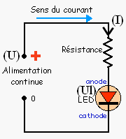
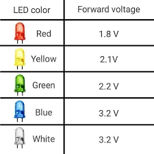
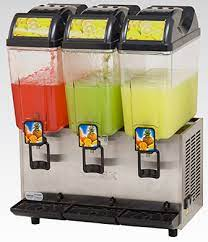
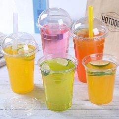
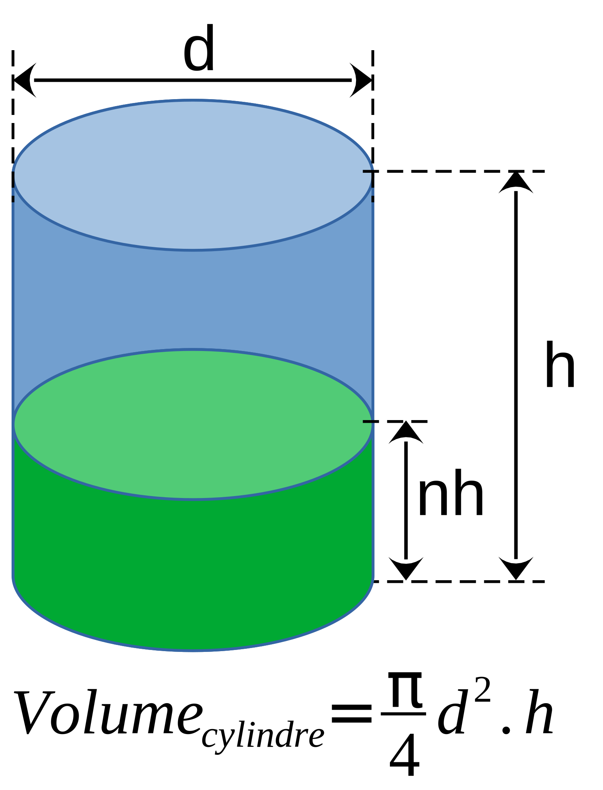

Ce mois-ci, M Fethi veut peindre le plafond du salon de sa maison. On suppose que le salon est de forme
rectangulaire et qu'il mesure 6m30 de longueur et 5m20 de largeur.
Sachant que le rendement de la peinture utilisée est de 6m²/Kg, on veut calculer la quantité de peinture
nécessaire pour peindre le salon de M Fethi 3 couches.
Peinture & Décor
Nous avons écrit le programme suivant pour résoudre le problème :
# Longueur de la pièce en m
long = 6.30
# Largeur de la pièce en m
larg = 5.20
# Nombre de couches de peinture
nbc = 3
# Rendement en m²/Kg
rend = 6
# Surface du toit m²
st = 32.76 # todo : indiquer la formule
# Surface à peindre
sp = 98.28 # todo : indiquer la formule
# Quantité de peinture
qp = 16.38 # todo : indiquer la formule
print("Surface pièce =", st, "m²")
print("Nombre de couches =", nbc)
print("Surface totale =", sp, "m²")
print("Rendement =", rend, "m²/Kg")
print("La quantité de peinture =", qp, "Kg")
On demande de compléter, puis d'exécuter le programme et de vérifier, enfin, qu'il affiche le bon résultat.
Quelle est la quantité de peinture nécessaire pour peindre le salon ?
Peinture de la cuisine
Maintenant M Fethi veut peindre le plafond de la cuisine qui mesure 4m50 × 3m90, 2 couches seulement,
avec une peinture dont le rendement est de 4.5m²/Kg.
Quelle est la quantité de peinture nécessaire ?
Modifier le programme pour répondre à cette question.
Peintre professionnel
Sahbi peintre professionel
Sahbi, le professionnel de peinture, est intéressé par notre programme de calcul de quantité de peinture
puisqu'il lui permet d'estimer la quantité de peinture à acheter par ses clients.
Cependant, Sahbi est las de la nécessité de modifier le programme avant chaque
exécution, il veut un programme qui demande toutes les données nécessaires, effectue les
calculs et affiche le résultat.
Comment faire ?
Effectuer les changements requis sur le programme pour qu'il réponde aux exigences de Sahbi.
Programme version finale
Le programme comporte trois parties :
Saisie des données
Calculs
Affichage des résultats
# -- Saisie de données --
# Longueur de la pièce en m
long = float(input("Longueur de la pièce en m ? "))
# Largeur de la pièce en m
larg = float(input("Largeur de la pièce en m ? "))
# Nombre de couches de peinture
nbc = int(input("Nombre de couches de peinture ? "))
# Rendement en m²/Kg
rend = float(input("Rendement en m²/Kg ? "))
# -- Calculs --
# Surface du toit m²
st = long * larg
# Surface à peindre
sp = st * nbc
# Quantité de peinture
qp = sp / rend
# -- Affichages des rséultats --
print("Surface pièce =", st, "m²")
print("Nombre de couches =", nbc)
print("Surface totale =", sp, "m²")
print("Rendement =", rend, "m²/Kg")
print("La quantité de peinture =", qp, "Kg")
Exemples d'exécution
Le nouveau programme affiche des résultats différents selon les entrées de l'utilisateur.
Longueur de la pièce en m ? 6
Largeur de la pièce en m ? 3.5
Nombre de couches de peinture ? 2
Rendement en m²/Kg ? 10
Surface pièce = 21.0 m²
Nombre de couches = 2
Surface totale = 42.0 m²
Rendement = 10.0 m²/Kg
La quantité de peinture = 4.2 Kg
Longueur de la pièce en m ? 4
Largeur de la pièce en m ? 2.5
Nombre de couches de peinture ? 1
Rendement en m²/Kg ? 6
Surface pièce = 10.0 m²
Nombre de couches = 1
Surface totale = 10.0 m²
Rendement = 6.0 m²/Kg
La quantité de peinture = 1.6666666666666667 Kg
Résumé
Saisie
L'entrée des données utilisateur est, principalement, effectuée à partir du clavier à l'aide de la fonction
input(...). Cette fonction retourne toujours une chaîne de caractères (type
string).
Syntaxe de la fonction input(...)
Souvent, on désire saisir des données numériques de type entier ou réel.
Dans ce cas, il faudra convertir la valeur saisie à l'aide des fonctions :
int(...) pour récupérer un entier
Et, float(...) pour récupérer un réel.
Conversions de types
Exemple
# Saisie d'une chaîne de caractères
ch = input("Votre nom ? ")
# Saisie d'un nombre entier
age = int(input("Quel âge as-tu ? "))
# Saisie d'un nombre réel
moy = float(input("Quelle est ta moyenne ? "))
// Saisie d'une chaîne de caractères
Ecrire("Votre nom ? ")
Lire(ch)
// Saisie d'un nombre entier
Ecrire("Quel âge as-tu ? ")
Lire(age)
// Saisie d'un nombre réel
Ecrire("Quelle est ta moyenne ? ")
Lire(moy)
Sofien et Saber habitent dans deux villes différentes éloignées d'une distance d. Si les
deux camarades partent en même temps, on désire calculer et afficher à quel instant ils vont se rencontrer.
On suppose que Sofien avance à une vitesse constante notée v1 et que Saber avance à une vitesse
constante notée v2.
On donne la formule qui permet de calculer le temps de rencontre en fonction de la distance et de la vitesse
des deux personnes.
Temps de rencontre des deux personnes
Ecrire un programme qui permet de simuler cette situation.
Distance en km ? 3
Vitesse de Sahbi km/h ? 7
Vitesse de Sofien km/h ? 8
Rencontre après 12 mn et 0 s
Sahbi se trouve à 1.4 km de sa maison
Sofien se trouve à 1.6 km de sa maison
Distance en km ? 0.5
Vitesse de Sahbi km/h ? 8
Vitesse de Sofien km/h ? 9
Rencontre après 1 mn et 45 s
Sahbi se trouve à 0.235 km de sa maison
Sofien se trouve à 0.265 km de sa maison
Distance en km ? 0.2
Vitesse de Sahbi km/h ? 3
Vitesse de Sofien km/h ? 3.5
Rencontre après 1 mn et 50 s
Sahbi se trouve à 0.092 km de sa maison
Sofien se trouve à 0.108 km de sa maison
Calcul Résistance
Le courant qui traverse une diode LED ne doit pas dépasser 20mA et la tension à ses bornes doit être limitée
selon sa couleur.
Pour celà, on utilise souvent une résistance en série avec une diode LED pour limiter le courant dans la
diode, et ainsi éviter de la griller.


Alimentation Diode LED
On demande de concevoir un programme qui :
Saisit les valeurs suivantes :
La tension d'alimentation en Volts, notée U
La tension au bornes de la diode en Volts (voir tableau), notée Uf
Le courant parcourant la diode (entre 10mA à 20mA), noté If
Calcule la résistance R : R = (U - Uf) * 1000 / If
Affiche sa valeur
Tension d'alimentation ? 5
Tension LED ? 1.8
Courant diode mA ? 15
R = 213 Ω
Tension d'alimentation ? 12
Tension LED ? 3.2
Courant diode mA ? 15
R = 586 Ω
Tension d'alimentation ? 9
Tension LED ? 2.1
Courant diode mA ? 10
R = 690 Ω
Distributeur de Jus


Distributeur de jus / Gobelets de jus
Ayoub est un élève intelligent, il a conçu dans le club de robotique un distributeur de jus ingénieux. Ce
système demande à l'utilisateur d'entrer la quantité de jus qj à sa disposition (en Cl) et le
nombre de personnes à servir np.
Une fois les informations validées le robot remplit automatiquement les np gobelets de jus.
On demande d'écrire un programme qui calcule la quantité de jus à mettre dans chaque gobelet, et puis
l'affiche.
On rappelle que : 1 litre = 100 Cl
Quantité de jus en Cl ? 100
Nombre de personnes ? 5
Quantité de jus/Gobelet = 20 Cl
Quantité de jus en Cl ? 75
Nombre de personnes ? 4
Quantité de jus/Gobelet = 18 C
Jogging
Tous les matins, Samir aime faire un jogging dans son quartier qui possède la forme d'un triangle rectangle.
Pour mesurer sa performance, Samir désire calculer sa vitesse moyenne après un jogging.
On rappelle que :
vitesse = distance / temps
vitesse(km/h) = vitesse(m/s) * 3.6
Ecrire un programme qui :
Saisit le temps total du jogging tj, en secondes.
Saisit le nombre de tours effectué autour du quartier nbt.
Saisit la longueur de la base du triangle a
Saisit la longueur de l'hauteur b
Calcule la longueur de l'hypoténus c, On rappelle que c peut être calculé à l'aide de la
formule de Pythagore : c² = a² + b²
Calcule le périmètre du quartier pq, pq = (a + b + c)
Calcule la vitesse de Samir v, v = pq * nbt / tj
Affiche le résultat en m/s et en km/h
Temps jogging (s) ? 4000
Nombre de tours ? 19
Longueur de la base (m) ? 500
Longueur de l'hauteur (m) ? 100
Vitesse de Samir = 5 m/s = 18 km/h
Temps jogging (s) ? 3600
Nombre de tours ? 15
Longueur de la base (m) ? 500
Longueur de l'hauteur (m) ? 100
Vitesse de Samir = 4 m/s = 16 km/h
Citerne d'huile
Dans une presse d'huile, l'huile est conservée dans des citernes cylindriques de diamètre d et de
profondeur h. Sur la paroie de la citerne un indicateur gradué indique le niveau nh de l'huile
sous forme d'un pourcentage.
Si l'indicateur affiche 0%, la citerne est vide.
Si l'indicateur affiche 20%, la citerne est remplie à 20% de sa capacité.
Si l'indicateur affiche 100%, la citerne est totalement remplie.
On demande d'écrire l'algorithme d'un programme qui saisit les données de l'utilisateur (en mètres), puis
affiche la quantité de l'huile en litres.
On donne :
Le diamètre de la citerne d et son hauteur (h) sont mesurés en mètres.
Le niveau de l'huile nh est mesuré en pourcentage (%).
1 m3 = 1000 litres
La constante π (pi) peut être importée du module math :
from math import pi
# calcul de l'aire d'un cercle
r = 1.5
print(pi*r*r)

Citerne d'huile
Donner le diamètre de la citerne (m) : 1.2
Donner l'heuteur de la citerne (m) : 3
Donne le niveau de l'huile (%) : 20
La citerne contient 678 litres d'huile.
Gare routière
Gare routière
Un bus dans une gare routière, commence ses courses à partir de hd (heure de départ) du matin.
Ses courses continuent jusqu'au soir hf (heure fin). Sachant que le bus revient à la gare
routière toutes les dt (durée trajet) minutes, on veut calculer le nombre de voyages de ce bus en
une journée.
On demande d'écrire un programme qui permet de trouver le nombre de voyages effectués par le bus le long de
la journée.
Exemple d'exécution
Quelle est l'heure de départ (hh:00) ? 5
Quelle est l'heure de fin (hh:00) ? 17
Quelle est la durée du trajet ? 20
Le bus fait 36 voyages de 5h à 17h.
Corrigez-moi !
Débogage d'un programme
input("Donner un entier [10, 99] : ") = a
b = "Donner un entier [10, 99] : "
moy = a + b sur 2
print La moyenne de a et b est moy
Donner un entier [10, 99] : 15
Donner un entier [10, 99] : 30
La moyenne de 15 et 30 est 22
Donner un entier [10, 99] : 16
Donner un entier [10, 99] : 80
La moyenne de 16 et 80 est 48